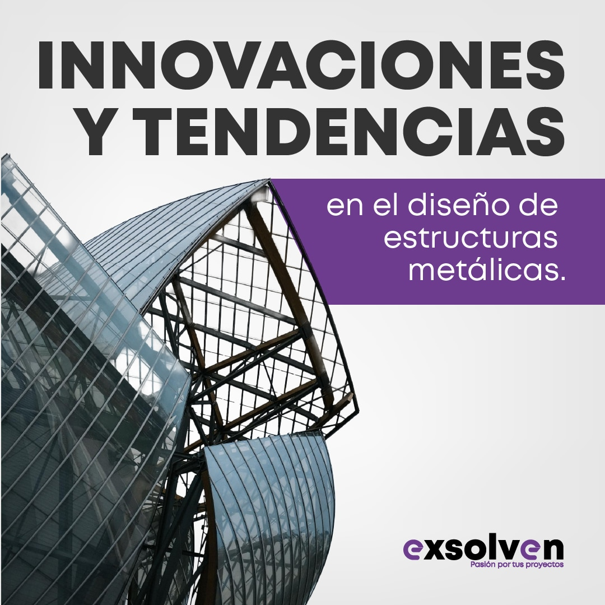

Tendencias en estructuras metálicas para 2025
El sector de las estructuras metálicas está evolucionando rápidamente con nuevas tecnologías, materiales sostenibles y métodos de construcción más eficientes.
Innovaciones clave
- Uso creciente de acero reciclado.
- Modelado BIM y software especializado para mayor precisión.
- Estructuras más ligeras y resistentes.
- Tecnologías anticorrosivas avanzadas.
En L.U.D.I.E.R seguimos apostando por la innovación y la incorporación de estas tendencias en nuestros proyectos, garantizando siempre calidad y seguridad.